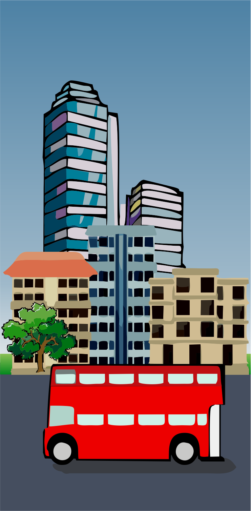
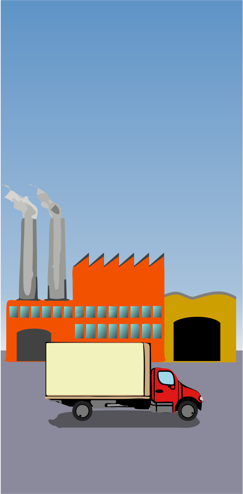
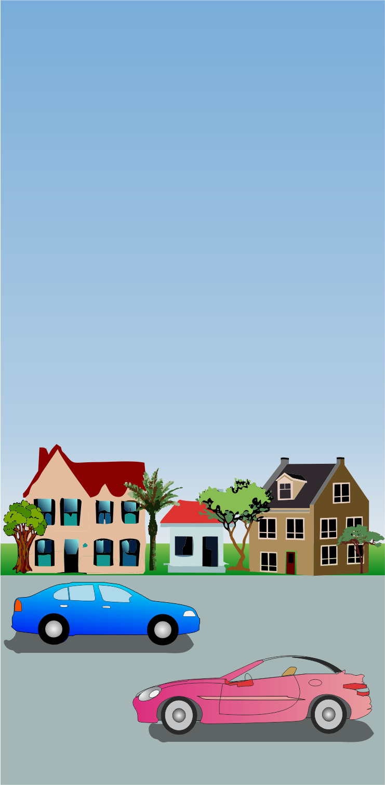
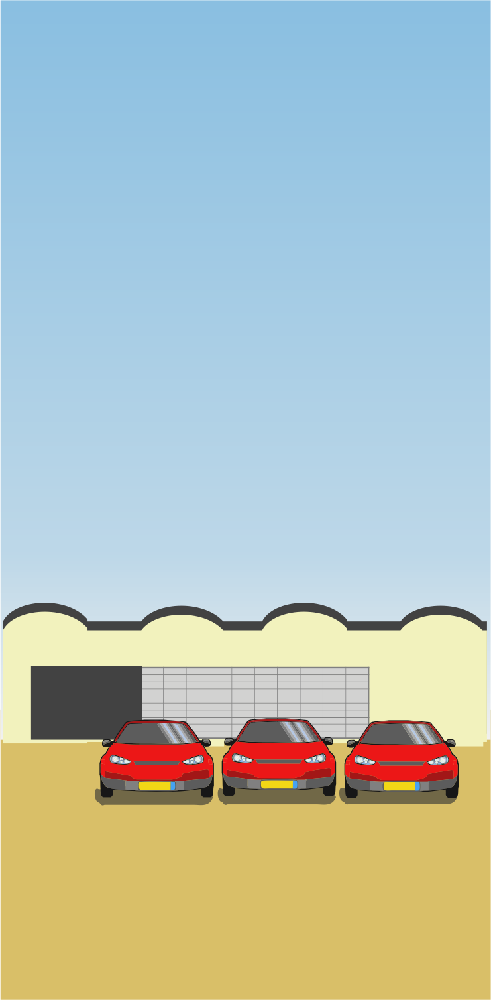
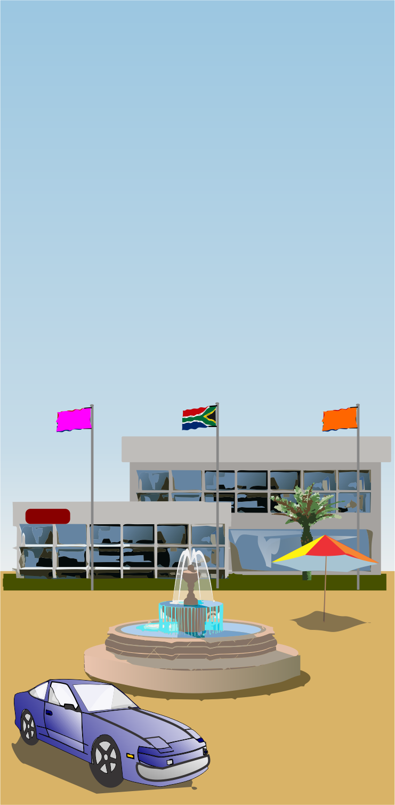
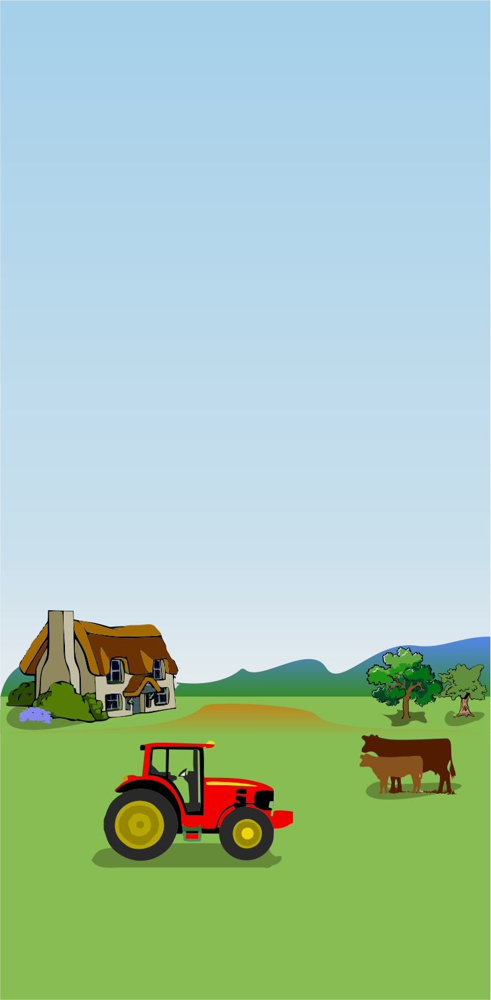
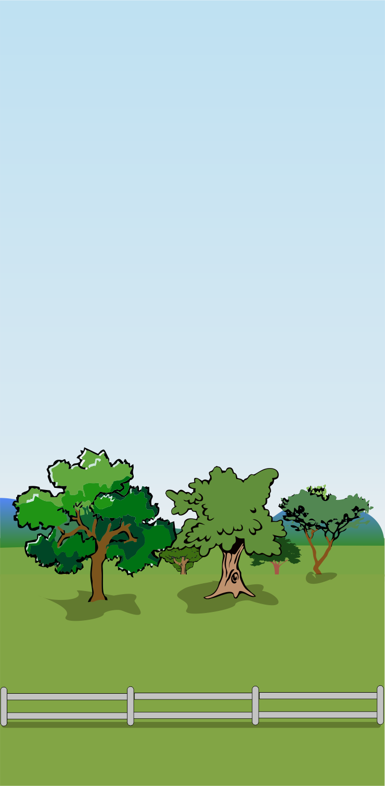

Land use zones:
|  | CBD (Central business district) | Consists of shops and offices. Transport routes converge here and generally it has the highest land values. |
|  | Heavy industry | Associated with lots of pollution (air, water and noise). |
|  | Middle income residential | Houses found in the suburbs. |
|  | Light industry | Found along main transport routes. Includes industry such as clothing, food and furniture. |
|  | Office parks and new shopping centres | These are often located a fair distance from the CBD near residential areas. |
| < | Rural-urban fringe | Located on the outskirts of a city. |
|  | Green belts | Areas of parks and recreation. |